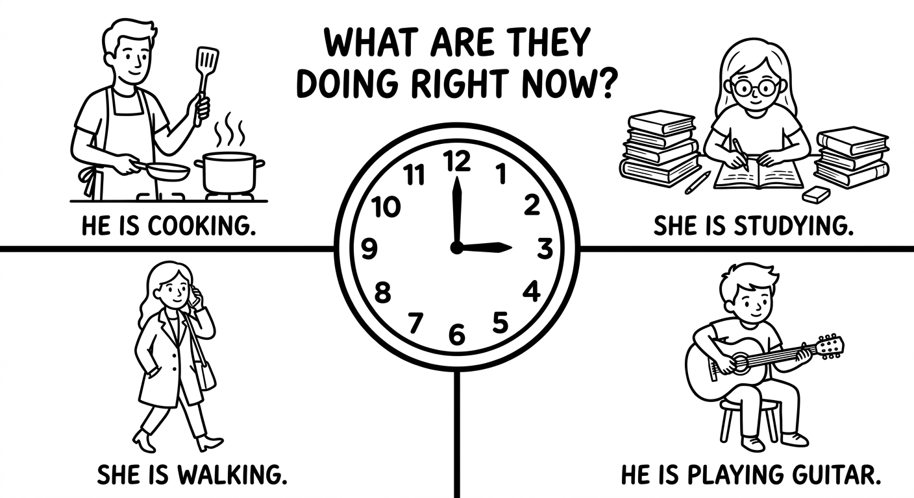
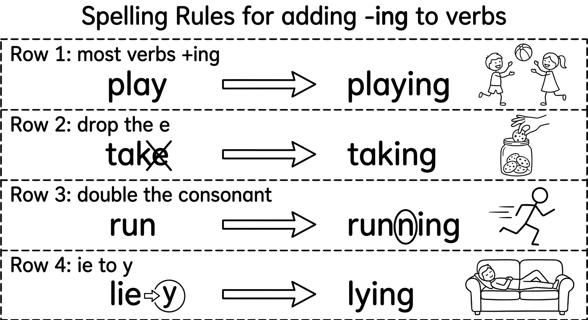
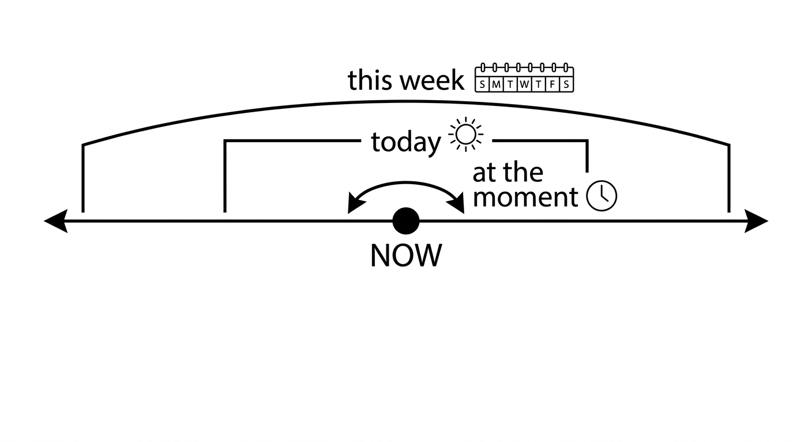
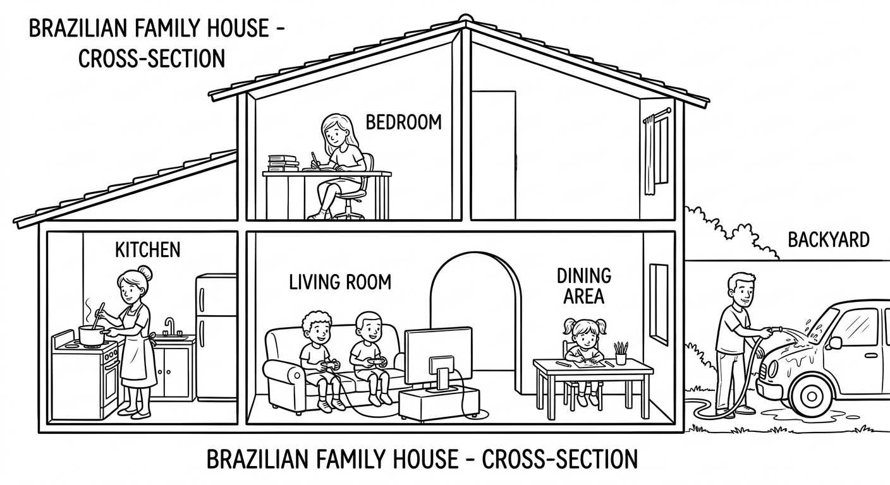
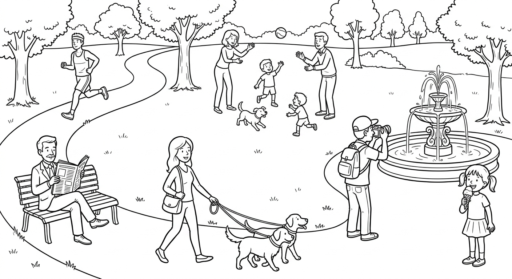
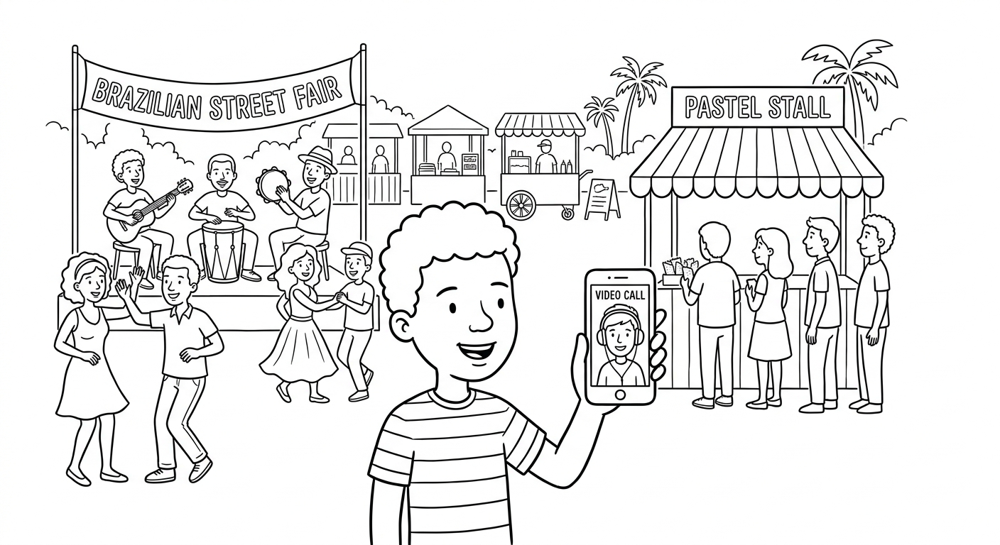

The Video Call: Say What Is Happening Right Now
Use the Present Continuous to describe a real scene as it happens: call someone, say what you are doing, describe what everyone around you is doing, and keep the conversation going when the connection is bad.

Call a friend or family member and describe what is happening around you right now: who is there, what everyone is doing, and what you are doing. (Ligue para alguém e descreva o que está acontecendo agora ao seu redor.)
| Purpose | Useful language |
|---|---|
| Say what you are doing (dizer o que você está fazendo) | I'm walking to the bus stop. / I'm making dinner right now. |
| Describe the scene (descrever a cena) | The kids are playing outside. / Everyone is watching the game. |
| Ask what is happening (perguntar o que está acontecendo) | What are you doing? / What's going on there? / Is Dad working now? |
| Repair communication (resolver mal-entendidos) | I can't hear you — can you repeat? / Slower, please. / Do you mean now or every day? |
Listen without reading the script. Write short answers.
Where is Bia calling from?
She is calling from the community centre.What is Marcos doing?
He is putting up balloons.What does Bia say when she can't hear her mum?
She says "Sorry, I can't hear you — can you repeat?"0–15: mission and listening warm-up. 15–45: Present Continuous formula, including the contrast with the Present Simple (rule boxes in Units 6.1 and 6.2). 45–80: choose one controlled exercise from Unit 6.1 (Exercise 1 or 2) and one from Unit 6.2 (Exercise 3 or 4); read the Unit 6.2 phone dialogue in pairs. 80–115: Mission Lab. 115–120: Can-Do exit check and home mission. The reading (Unit 6.3, Exercises 5–6) and the writing task (Unit 6.4, Exercise 7) are extension or homework.
Read twice: Bia: “Hi, Mum! Can you see me? I'm calling from the community centre.” Mum: “Yes! What's happening there? It's noisy!” Bia: “We're preparing a party. Marcos is putting up balloons, and two volunteers are cooking.” Mum: “Are you helping?” Bia: “Yes, I'm making the fruit salad right now.” Mum: “And what is your teacher doing?” Bia: “Sorry, I can't hear you — can you repeat?” Mum: “What is your teacher doing?” Bia: “She's taking photos of everything!”
Present Continuous Formation
We form the Present Continuous with:
Subject + am / is / are + verb-ing
Em portugues: Sujeito + am / is / are + verbo com -ing
This tense describes actions that are in progress right now or around the present time.
| Form | Structure | Example |
|---|---|---|
| Affirmative | Subject + am/is/are + verb-ing | She is studying English. |
| Negative | Subject + am/is/are + not + verb-ing | They are not watching TV. |
| Interrogative | Am/Is/Are + subject + verb-ing? | Are you listening to music? |
Contractions (common in spoken and informal English):
- I am = I'm → I'm working.
- He is = He's → He's sleeping.
- She is = She's → She's cooking.
- It is = It's → It's raining.
- We are = We're → We're studying.
- You are = You're → You're reading.
- They are = They're → They're playing.
- is not = isn't → She isn't sleeping.
- are not = aren't → We aren't eating.
Pay attention to these spelling rules when adding -ing to verbs:
| Rule | Explanation | Examples |
|---|---|---|
| Most verbs | Just add -ing | play → playing, read → reading, eat → eating |
| Silent -e | Drop the -e, add -ing | make → making, write → writing, dance → dancing |
| Short vowel + consonant | Double the final consonant, add -ing | run → running, sit → sitting, swim → swimming |
| Verbs ending in -ie | Change -ie to -y, add -ing | lie → lying, die → dying, tie → tying |
| Verbs ending in -ee | Just add -ing (do NOT drop the -e) | see → seeing, agree → agreeing |
| Verb | Portugues | -ing Form |
|---|---|---|
| cook | cozinhar | cooking |
| study | estudar | studying |
| write | escrever | writing |
| run | correr | running |
| swim | nadar | swimming |
| dance | dancar | dancing |
| read | ler | reading |
| listen | ouvir / escutar | listening |
| sit | sentar | sitting |
| make | fazer / fabricar | making |
| talk | conversar / falar | talking |
| sleep | dormir | sleeping |
| drink | beber | drinking |
| eat | comer | eating |
| play | jogar / brincar / tocar | playing |
| work | trabalhar | working |
| wait | esperar | waiting |
| take | pegar / levar | taking |

Examples in Context
I am studying for my English test right now.
Eu estou estudando para a minha prova de ingles agora.
Rafaela is cooking dinner in the kitchen.
Rafaela esta cozinhando o jantar na cozinha.
The children are playing soccer in the park.
As criancas estao jogando futebol no parque.
Pedro is not sleeping. He is reading a comic book.
Pedro nao esta dormindo. Ele esta lendo uma revista em quadrinhos.
We aren't watching TV. We're doing our homework.
Nos nao estamos assistindo TV. Nos estamos fazendo nossa licao de casa.
Are you listening to music?
Voce esta ouvindo musica?
What is Beatriz doing at the moment?
O que a Beatriz esta fazendo no momento?
Is he running? — Yes, he is. / No, he isn't.
Ele esta correndo? — Sim, ele esta. / Nao, ele nao esta.
Common spelling mistakes with -ing forms:
- Forgetting to drop the -e: "writeing" → "writing"
- Forgetting to double the consonant: "runing" → "running"
- Doubling when unnecessary: "readding" → "reading" (two vowels before the consonant, so do NOT double)
- Wrong -ie to -y change: "lieing" → "lying"
Suggested time: 30 minutes
Key concept: Students at this level often struggle with spelling rules for -ing forms. Spend extra time on the "double consonant" rule (CVC pattern: Consonant-Vowel-Consonant in one-syllable verbs). Point out that verbs like "read" and "eat" do NOT double because they have two vowels before the final consonant.
Activity: Write 10 base verbs on the board and have students race in pairs to write the correct -ing form. Check answers as a class and discuss any mistakes.
Fill in the blanks with the correct Present Continuous form of the verb in parentheses. Pay attention to spelling rules.
Select the correct Present Continuous form to complete each sentence.
Look! The cat _______ on the table!
b) is sittingJuliana _______ a letter to her friend in Canada.
c) is writing_______ the students _______ attention to the teacher?
a) Are ... payingIt _______ outside. Take your umbrella!
b) is rainingMy brother _______ right now. He went to bed early.
a) isn't studyingUses of Present Continuous
We use the Present Continuous for:
| Use | Explanation | Example |
|---|---|---|
| 1. Actions happening now | Something in progress at the exact moment of speaking | She is talking on the phone right now. |
| 2. Temporary situations | Something happening for a limited period of time, not permanent | Gustavo is living with his aunt this month. |
| 3. Actions around now | Something happening around the present time, but not necessarily at the exact moment of speaking | I am reading a great book. (not at this second, but currently) |
Use 1: Actions Happening Right Now
Look! The bus is coming!
Olha! O onibus esta vindo!
Shh! The baby is sleeping. Don't make noise.
Shh! O bebe esta dormindo. Nao faca barulho.
I can't talk now. I'm eating lunch.
Nao posso falar agora. Estou almocando.
Use 2: Temporary Situations
Fernanda is working at a cafe this summer.
Fernanda esta trabalhando em um cafe neste verao.
My cousin is staying with us for two weeks.
Meu primo esta ficando com a gente por duas semanas.
They are living in Curitiba while their house is being renovated.
Eles estao morando em Curitiba enquanto a casa deles esta sendo reformada.
Use 3: Actions Around the Present Time
I'm reading a really interesting book about space.
Eu estou lendo um livro muito interessante sobre o espaco.
Rodrigo is learning to play the guitar.
Rodrigo esta aprendendo a tocar violao.
We are studying for our final exams this week.
Nos estamos estudando para as provas finais esta semana.
These time expressions are commonly used with the Present Continuous:
| Time Expression | Portugues | Example |
|---|---|---|
| now | agora | She is studying now. |
| right now | agora mesmo | I'm eating right now. |
| at the moment | no momento | He is sleeping at the moment. |
| currently | atualmente | We are currently working on a project. |
| today | hoje | They are visiting their grandparents today. |
| this week / this month | esta semana / este mes | I'm taking a cooking class this month. |
| Look! / Listen! | Olha! / Escute! | Look! It's snowing! |

Dialogue: What Are You Doing Right Now?
Some verbs are called stative verbs (verbos de estado). They describe states, not actions, and are NOT normally used in the Present Continuous. Use the Present Simple instead.
| Stative Verb | Portugues | Correct / Incorrect |
|---|---|---|
| know | saber / conhecer | I know the answer. (NOT: I am knowing) |
| want | querer | She wants a new phone. (NOT: She is wanting) |
| like | gostar | I like chocolate. (NOT: I am liking) |
| love | amar | He loves music. (NOT: He is loving) |
| believe | acreditar | I believe you. (NOT: I am believing) |
| need | precisar | We need help. (NOT: We are needing) |
| understand | entender | She understands the lesson. (NOT: She is understanding) |
| remember | lembrar | I remember his name. (NOT: I am remembering) |
| prefer | preferir | They prefer tea. (NOT: They are preferring) |
Cuidado! In Portuguese, you can say "Eu estou precisando de ajuda" or "Eu estou querendo ir embora." In English, these verbs are NOT used in the continuous form. This is a common mistake for Brazilian learners!
Suggested time: 35 minutes
Key concept: Brazilian students often overuse the Present Continuous because in Portuguese, the "gerundio" (estou fazendo) can be used with stative verbs. Emphasize the difference between action verbs (which can be used in the continuous) and stative verbs (which cannot). Give real examples of common errors Brazilian students make: "I am knowing," "She is wanting," "We are needing."
Activity: Read the dialogue aloud with a volunteer. Then have students work in pairs to identify all the Present Continuous forms in the dialogue and explain which use each one represents (happening now, temporary, or around now).
Fill in the blanks with the correct form of the verb in parentheses. Use the Present Continuous for action verbs and the Present Simple for stative verbs. Be careful!
Each sentence below has a mistake with the Present Continuous. Rewrite the sentence correctly on the line. The mistakes may involve spelling, stative verbs, or wrong verb forms.
I am knowing the answer to this question. ✗
I know the answer to this question.She is writeing an email to her teacher. ✗
She is writing an email to her teacher.We are needing more time to finish the project. ✗
We need more time to finish the project.The children is playing in the garden right now. ✗
The children are playing in the garden right now.He is runing very fast in the race. ✗
He is running very fast in the race.I am believing everything she says. ✗
I believe everything she says.Pedro are studying for his test at the moment. ✗
Pedro is studying for his test at the moment.They are lieing on the grass in the park. ✗
They are lying on the grass in the park.Reading: A Busy Saturday
It is Saturday morning at the Silva family home in Recife. It is 10 o'clock, and everyone is busy doing something different. The house is full of noise, movement, and energy.
In the kitchen, Dona Marta, the grandmother, is cooking feijoada for lunch. She is stirring the big pot on the stove and singing a song from her youth. The delicious smell of the food is filling the whole house. She always cooks feijoada on Saturdays, but today she is making a special version with extra sausage because the whole family is coming for lunch.
In the living room, the twins, Matheus and Mateus, are sitting on the floor. They are playing a video game together. They are laughing and shouting because Matheus is winning, and Mateus is not happy about it. Their dog, Pipoca, is lying next to them and sleeping peacefully despite all the noise.
Upstairs, their older sister, Carolina, is not playing. She is studying in her bedroom because she has an important exam on Monday. She is reading her biology textbook and making notes in her notebook. She is also listening to soft music to help her concentrate. Carolina is currently preparing for the ENEM exam, so she is studying very hard these days.
In the backyard, their father, Seu Roberto, is washing his car. He is also talking on his phone at the same time. He is speaking to his brother, Tio Marcos, who is driving to Recife from Joao Pessoa. Tio Marcos is bringing his family to visit for the weekend, and everyone is excited.
Meanwhile, the youngest member of the family, little Sofia, is drawing pictures at the dining table. She is making a welcome card for Tio Marcos and his family. She is using colorful pencils and writing "Welcome!" in big letters. She isn't spelling everything correctly, but her card is beautiful.
It is a typical Saturday at the Silva home. Everyone is doing something different, but they are all looking forward to the same thing: a wonderful family lunch together.

Pre-reading activity: Ask students: "What do you usually do on Saturday mornings? What is your family doing right now?" This helps activate the Present Continuous before reading.
Reading strategy: Have students underline all the Present Continuous verbs in the text as they read. Ask them to count how many different -ing forms they can find. (There are over 20!)
Post-reading discussion: Ask students to describe what each family member is doing using complete sentences. This reinforces both reading comprehension and oral production.
Read each sentence. Write T (True) or F (False) based on the text "A Busy Saturday."
Answer the questions in complete sentences based on the text.
What is Dona Marta doing in the kitchen, and why is today's feijoada special?
Dona Marta is cooking feijoada and singing a song. Today's feijoada is special because she is making it with extra sausage because the whole family is coming for lunch.What is the dog Pipoca doing while the twins are playing?
Pipoca is lying next to them and sleeping peacefully despite all the noise.Why is Carolina studying so hard these days?
Carolina is studying hard because she is currently preparing for the ENEM exam.What are Seu Roberto and Tio Marcos doing at the same time?
Seu Roberto is washing his car and talking on his phone. Tio Marcos is driving to Recife from Joao Pessoa to visit the family for the weekend.Writing: What Is Everyone Doing?
Choose ONE of the two options below and write a paragraph of at least 8 sentences using the Present Continuous. Describe what different people are doing.
Option A: Look around you right now. Describe what people around you are doing at this moment. What are your classmates doing? What is your teacher doing? What are people outside the window doing?
Option B: Imagine a busy scene (a park on a Sunday, a shopping mall on a Saturday afternoon, a beach in the summer, or a school during recess). Describe what at least 5 different people are doing in that scene.
- Use a variety of action verbs (don't repeat the same verb too many times).
- Include affirmative and negative sentences. Example: "The man is reading a newspaper. He is not talking to anyone."
- Use time expressions like right now, at the moment, and currently.
- Give names to the people in your scene to make it more vivid.
- Remember: do NOT use the continuous with stative verbs!
- Check your -ing spelling before finishing!
My chosen option: ___
My scene: ___

Suggested time: 20 minutes
Assessment criteria:
- At least 8 sentences using the Present Continuous correctly
- Variety of action verbs (at least 5 different verbs)
- At least one negative sentence
- Correct -ing spelling
- No stative verbs used in the continuous form
- Use of time expressions (now, right now, at the moment, etc.)
Extension activity: Have students swap their paragraphs with a partner. The partner reads the paragraph and draws the scene described. Then they compare the drawing with what the writer imagined. This is a fun way to check comprehension and accuracy.
Mission Lab: The Video Call

Work in pairs, sitting back to back like a phone call. Student A is at a busy place; Student B is at home. Then switch roles.
Caller: choose a busy scene (street fair, family lunch, bus station, or this classroom right now). Describe at least five things that are happening, plus what you are doing.
Listener: ask at least four questions (What are you doing? / What's going on? / Is anyone ...-ing?), including one contrast question (Do you do that every day, or are you doing it now?).
Mission success: the listener can report three things that are happening in the scene — without switching to Portuguese.
Once during the call, your partner must speak very quietly, like a bad connection. Don't give up — say: I can't hear you — can you repeat? or Slower, please.
In ChatGPT Voice, say: “Act as my friend on a video call. Ask me one question at a time about what is happening around me right now. Speak slowly. Correct my main mistake in Portuguese — especially am/is/are + -ing.” Practice for 10 minutes. Offline: look out of your window for one minute and say ten sentences about what is happening; record them on your phone and listen back.
Listen for message completion first: did the listener get a clear picture of the scene? Then target am/is/are agreement, -ing spelling, stative verbs kept out of the continuous, the now-vs-routine contrast, and repair language. Do not interrupt every error. Note one successful phrase and one next step for each student. Give feedback in Portuguese where needed.
Chapter 6 - Answer Key
Exercise 1: Form the Present Continuous
Exercise 2: Choose the Correct Option
Exercise 3: Complete with the Present Continuous or Present Simple
Exercise 4: Find and Correct the Mistakes
Exercise 5: True or False
Exercise 6: Answer the Questions
Exercise 7: Describe a Busy Scene
Answers will vary. Check for correct use of Present Continuous, variety of action verbs (at least 5 different verbs), at least one negative sentence, correct -ing spelling, no stative verbs in the continuous form, and use of time expressions.